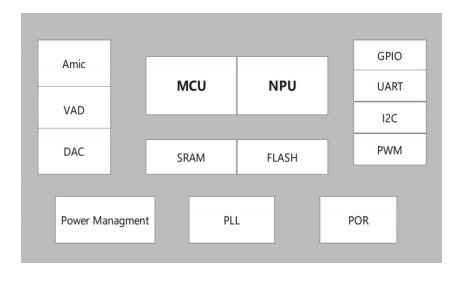
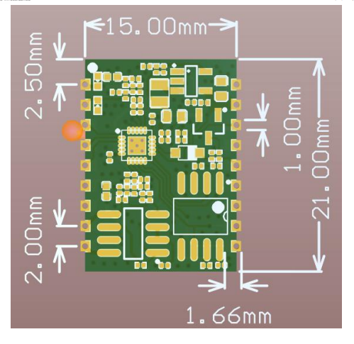

SU-20T
淘宝链接：https://shop379208868.taobao.com
简介
产品概述
SU-20T 是一款低成本、低功耗、小体积的离线语音识别模组，内置高精度语音检测模块 配合系统多级启动模式使芯片待机功耗进入亚毫瓦级，工作功耗几毫瓦级别，能快速应用于智能家居， 各类智能小家电，86 盒，玩具，灯具等需要语音操控的产品。

外观尺寸


特性
32bit 低功耗 RISC 内核 MCU 最高频率 50M
支持 DSP 指令集以及 FPU 浮点运算单元
低功耗语音专用 NPU(神经网络处理单元)
内集成 208KB SRAM ，内置 512KB FLASH，外置 2M FLASH
内置 3W、单声道 AB 类功放
支持 1 路驻极体麦，1 路喇叭
支持 3.3V 电源输入
UART 接口的电压 3.3V
主要参数